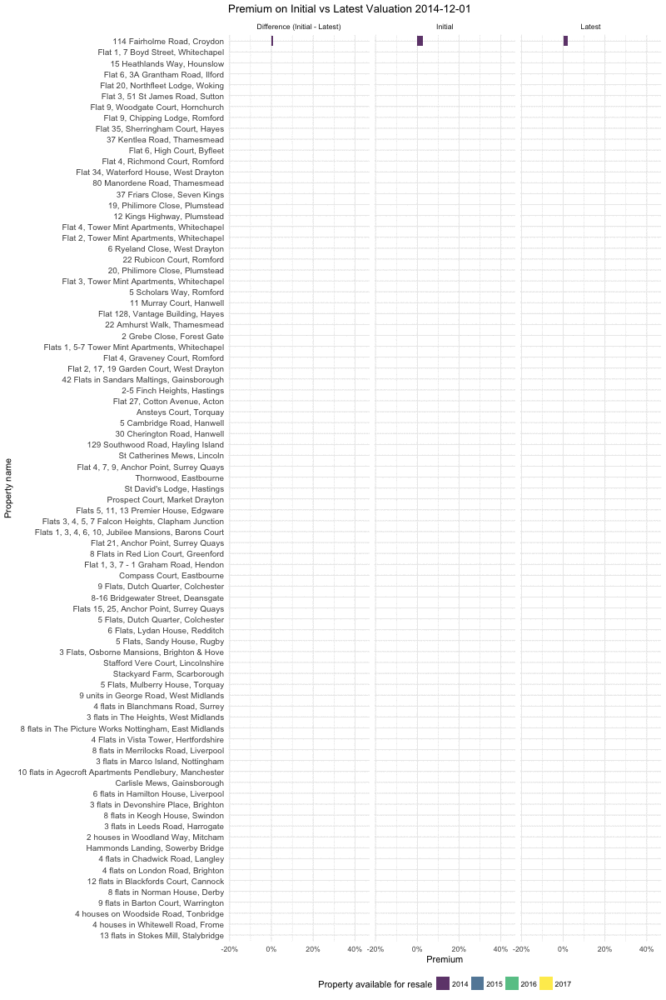

Previously I have looked at visualising the Property Partner portfolio using tableau, and explored their resale date from July 2017. In this post I will be exploring the August Open House resale data focussing on property premiums over both initial and latest valuation. The code for this post is available here.
Property Partner advertises returns by combining both projected capital and rental returns. Properties are held for 5 years at which point any capital gain can be realised. However, Property Partner provides a secondary market which allows capital returns to be realised by selling shares to other investors. The sale price of shares is set by the market, and may or may not depend on the underlying value of the property. This post will explore the premium that sales on the secondary market set on both the initial and latest valuations of properties in the Property Partner Portfolio, and how this has changed over time. A first step is to look at premiums over time, for each property, averaged over each month (as are all premiums in this post).
From the above plot we see that in the first year of operation all properties had premiums above 0% over initial valuation, but since then several have traded with premiums that are continuously negative. The majority of these properties have maintained steady premiums over initial valuation but several devalued in the second half of 2017. A single property (5 flats, Dutch Quarter, Colchester) has consistently traded with a negative premium although this appears to be improving over time.
Unlike premiums over initial valuation, premiums over latest valuation appear to have decreased continuously over time for the majority of properties. This indicates that premiums are not completely adjusting for increases in property value, making it unlikely that those exiting early will fully realise capital gains. Both plots indicate a relationship between premiums and the date a property was made available for resale, with properties available earlier having higher premiums over both initial and latest valuation. The above plots are hard to interpret due to the number of properties in the portfolio, therefore the next step is to summarise the data by averaging premiums across all properties.
As we saw in the previous plots premiums over both initial and latest valuation were highest in 2015 and have since decreased. Since 2016 premiums over initial valuation appear to have stabilised between 5% to 10% and premiums over latest valuation appear to have stabilised between 0% to -8%. The relationship between premiums over latest and initial valuation is summarised in the following plot.
In the plots above there was some evidence that properties acquired at different dates traded differently. To investigate this the following plot shows the average monthly premium for properties launched in each year Property Partner has been operating, for both initial and latest valuation.
We see that properties acquired earlier consistently trade at a higher premium over both initial and latest valuation. Whilst the trend in initial valuation may be driven by increased valuation this cannot be the case for latest valuation. Instead, it is likely that this is a function of scarcity due to the lower supply of earlier properties. It may also be the case that previous performance on the platform is valued. This plot also indicates that premiums over latest valuation have constantly fallen for all years. Properties appear to start trading with a slightly positive premium, which then decreases over time. This indicates that premiums do not adjust fully as properties are revalued, meaning that realising potential capital gains early is unlikely. To explore this further the following plot compares premiums on initial and latest valuations over time, for individual properties.

From the plot we see that properties enter the market trading at a small premium to both valuations. Over time the relationship between premiums for initial and latest valuation weakens, with several properties trading at negative premiums for both valuations. To get a better idea of the relationship the following plot stratifies by the year a property was made available for resale.

Here we clearly see that when properties enter the market there is a strong correlation between premiums on latest and initial valuations. As properties are revalued we see that premiums on latest valuation do not adjust fully, although this effect varies wildly. This is likely to be driven by external factors such as dividend yield - with high dividend yields commanding a premium. The following interactive plot allows the figures above to be explored in detail.
For a final visualisation of this relationship the following plot shows premiums for individual properties over time, stratified by year available for resale.

Unfortunately this dataset was limited by having little additional information about each property, something which is key to understanding premiums. For example, as commented on above, it is likely that much of the variation is drive by dividend yield. However, it is clear that properties are not valued at their latest valuation and that therefore this should not be used to summarise the performance of a portfolio over the short term.
In a future post I will be exploring premiums further by joining the resale data used above with data on the Property Partner portfolio. The two datasets do not contain a common unique ID by which to link them, meaning that joining them will be less trivial that it should be. Hopefully Property Partner will improve the quality of the data they provide to investors so that analysis can be done more easily.
If you have any comments, ideas for further projects, or any similar analysis to share please comment below.
Bonus Plot!!